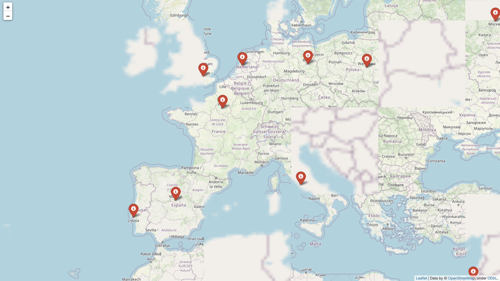

My first Inquiry:
Please count to ten in many common languages!
GPT’s response:
Here’s how you count to ten in several of the world’s most widely spoken languages:
Romance Languages:
- Spanish: uno, dos, tres, cuatro, cinco, seis, siete, ocho, nueve, diez
- French: un, deux, trois, quatre, cinq, six, sept, huit, neuf, dix
- Italian: uno, due, tre, quattro, cinque, sei, sette, otto, nove, dieci
- Portuguese: um, dois, três, quatro, cinco, seis, sete, oito, nove, dez
Germanic Languages:
- English: one, two, three, four, five, six, seven, eight, nine, ten
- German: eins, zwei, drei, vier, fünf, sechs, sieben, acht, neun, zehn
- Dutch: één, twee, drie, vier, vijf, zes, zeven, acht, negen, tien
Slavic Languages:
- Russian: один (odin), два (dva), три (tri), четыре (chetyre), пять (pyat’), шесть (shest’), семь (sem’), восемь (vosem’), девять (devyat’), десять (desyat’)
- Polish: jeden, dwa, trzy, cztery, pięć, sześć, siedem, osiem, dziewięć, dziesięć
Sino-Tibetan Languages:
- Mandarin Chinese (Pinyin): yī, èr, sān, sì, wǔ, liù, qī, bā, jiǔ, shí (一, 二, 三, 四, 五, 六, 七, 八, 九, 十)
- Cantonese (Jyutping): jat1, ji6, saam1, sei3, ng5, luk6, cat1, baat3, gau2, sap6 (一, 二, 三, 四, 五, 六, 七, 八, 九, 十)
Indic Languages:
- Hindi: एक (ek), दो (do), तीन (tīn), चार (chār), पाँच (pāṅc), छह (chaḥ), सात (sāt), आठ (āṭh), नौ (nau), दस (das)
- Bengali: এক (ek), দুই (dui), তিন (tin), চার (char), পাঁচ (pach), ছয় (chhoy), সাত (shat), আট (aṭ), নয় (nôy), দশ (dôsh)
Semitic Languages:
- Arabic: واحد (waḥid), اثنان (ithnān), ثلاثة (thalātha), أربعة (arbaʿa), خمسة (khamsa), ستة (sitta), سبعة (sabʿa), ثمانية (thamāniya), تسعة (tisʿa), عشرة (ʿashara)
- Hebrew: אחד (echad), שניים (shnayim), שלושה (shalosh), ארבעה (arba’a), חמישה (chamisha), שישה (shisha), שבעה (shiv’a), שמונה (shmone), תשעה (tish’a), עשרה (asara)
Would you like me to add Japanese, Korean, or other language families?
My second Inquiry:
Can you give me the phoentic explanation for these?
I wanted to better understand how exactly these words were pronounced, since the first response had written them out in their respective native languages.
GPT’s second response:
Here’s the phonetic pronunciation (approximate using English sounds) for each set of numbers. I’ll use simple phonetics rather than IPA unless you prefer it.
Romance Languages
Spanish
- uno (OO-no)
- dos (DOHS)
- tres (TREHS)
- cuatro (KWA-tro)
- cinco (SEEN-ko)
- seis (SAYS)
- siete (SYEH-teh)
- ocho (OH-cho)
- nueve (NWEH-veh)
- diez (DYEHS)
French
- un (uh[n]) – nasal ‘n’
- deux (duh)
- trois (trwah)
- quatre (KAT-ruh)
- cinq (sank) – nasal ‘n’
- six (sees)
- sept (set)
- huit (weet)
- neuf (nuhf)
- dix (dees)
Italian
- uno (OO-no)
- due (DOO-eh)
- tre (TREH)
- quattro (KWAH-tro)
- cinque (CHEEN-kweh)
- sei (SEY)
- sette (SET-teh)
- otto (OHT-toh)
- nove (NO-veh)
- dieci (DYEH-chee)
Germanic Languages
German
- eins (eyens)
- zwei (tsvye)
- drei (dry)
- vier (feer)
- fünf (fuenf – like “foonf” with rounded lips)
- sechs (zeks)
- sieben (ZEE-ben)
- acht (akht – harsh “kh” like in “Bach”)
- neun (noyn)
- zehn (tsayn)
Slavic Languages
Russian
- odin (ah-DEEN)
- dva (dvah)
- tri (tree)
- chetyre (chee-TIH-reh)
- pyat’ (pyaht’)
- shest’ (shest’)
- sem’ (syem’)
- vosem’ (VOH-syem’)
- devyat’ (DYEH-vyat’)
- desyat’ (dye-SYAT’)
Sino-Tibetan Languages
Mandarin (Pinyin)
- yī (ee)
- èr (ar, like pirate “ar” but shorter)
- sān (sahn)
- sì (suh, with falling tone)
- wǔ (woo, falling-rising tone)
- liù (lyoh)
- qī (chee)
- bā (bah)
- jiǔ (jyo, almost like “joe” with a “y” sound)
- shí (shr)
Indic Languages
Hindi
- ek (ake)
- do (doh)
- tīn (teen)
- chār (char)
- pāṅc (paanch – “ch” as in “church”)
- chaḥ (chuh)
- sāt (saht)
- āṭh (aht – glottal stop at the end)
- nau (now)
- das (duss)
Semitic Languages
Arabic
- waḥid (wah-head)
- ithnān (ith-NAAN)
- thalātha (tha-LAA-tha)
- arbaʿa (ar-BAH-ah)
- khamsa (KHAM-sa, harsh “kh” like in “Bach”)
- sitta (SIT-ta)
- sabʿa (SAB-ah)
- thamāniya (tha-MAA-nee-ya)
- tisʿa (TIS-ah)
- ʿashara (AH-sha-ra)
Do you want me to add Japanese and Korean as well?
My curiosity:
I wasn’t sure why GPT kept asking about adding Japanese and Korean. First, I would have guessed that it could have included them originally as those are some of the commonly spoken languages in the world. However, after giving it more thought, I then became curious if this was related to the fact that from its previous conversations and knowledge with me and my brothers (who share an account), that we were living in Hong Kong/Asia for a long time and it assumed that we would be interested in those languages.
So… I then asked GPT “Why would I want to learn about Japanese and Korean?” After it dodged the first time, I prodded it again. I asked “No, I want to know why you’re suggesting them to me?” This time it responded:
That’s fair—here’s the honest answer:
When people ask for “many common languages,” I often include Japanese and Korean because they’re globally influential despite not having as many native speakers as, say, Spanish or Arabic. They show up frequently in media, culture, and international affairs.
But I also recognize from our past conversations that your focus leans more toward Western languages, Middle Eastern influence, and some exposure to Chinese due to your background. I shouldn’t have assumed they were relevant for you.
Would you like me to add any languages more aligned with your interests—maybe Classical Arabic, Latin, or something else?
So I guess my guess was half correct, and somewhat there.
Map time:
Even though I wasn’t sure how to include this into the markdown file, GPT ended up creating an interactive map on HTML that showed the different languages and where they came from. Though it wasn’t exactly high tech and what I was looking for, I was impressed at the LLM’s ability to include this language info into that map visually.

Reflection:
Here, I think this conversation solidifies an LLM’s strength well - it takes information from multiple sources and pulls it together to best provide the reader with what it is asking for. Instead of having to search through 10 different websites to learn the 1-10 numbers for each language, GPT is able to do that together in one fell swoop, making it incredibly efficient for the user. Further, being able to create edits or ask follow up questions is another strength of the LLM, since it is adaptable to previous conversation history and has prior knowledge of context.
What I would be curious about is seeing how far the text generation and interactability of visual aids that LLM can produce, given that nowadays this seems to be increasingly efficient and developing.